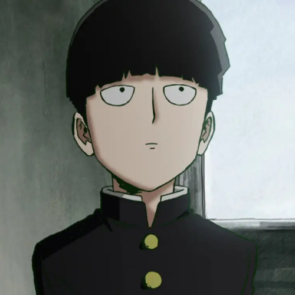

SHIGEO KAGESHAMA(MOB)
PROTAGONISTA
Shigeo Kageyama, también conocido como Mob, es un estudiante de 14 años que asiste a la preparatoria sal. Shigeo es una persona muy indulgente y comprensiva, nunca guarda rencor o resentimiento hacia quienes lo lastimaron.De niño, Shigeo aprendió que su poder psíquico estaba ligado a sus emociones. Por lo tanto, generalmente trata de controlar sus emociones. Ya que si son emociones negativas no puede controlar su poder y termina lastimando a otros, al contrario de que si tiene emociones positivas.